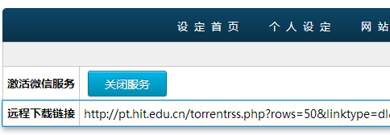
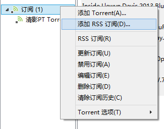
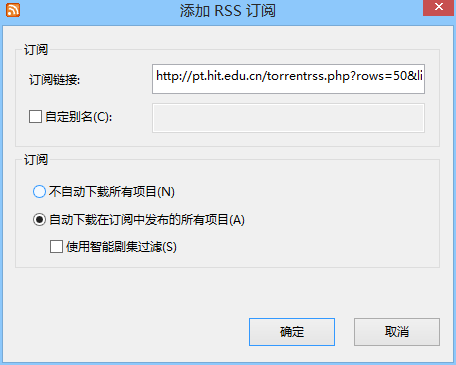
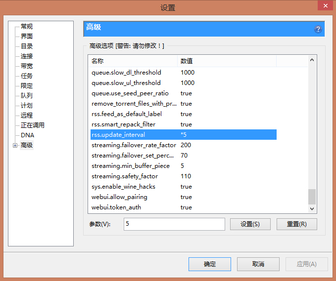

设置方法
- 进入网站控制面板，进入“其他设定”，复制远程下载链接地址
- 打开BitTorrent客户端（下面以μTorrent为例），右击侧栏“订阅”项目，点击添加RSS订阅
- 在“订阅链接”输入框中粘贴刚刚复制的链接，勾选“自动下载在订阅中的所有项目”并点击确定
- 打开菜单“选项”->“设置”，单击对话框右侧的“高级”项目。将右侧列表中的“rss.update_interval”的参数改为你需要定时更新远程下载任务列表的时间间隔，最短为5分钟
注意
- 要开启此功能，你的BitTorrent客户端需要支持RSS订阅功能
- 删除远程下载任务并不会删除已下载到本地的文件，也不会取消正在下载的任务